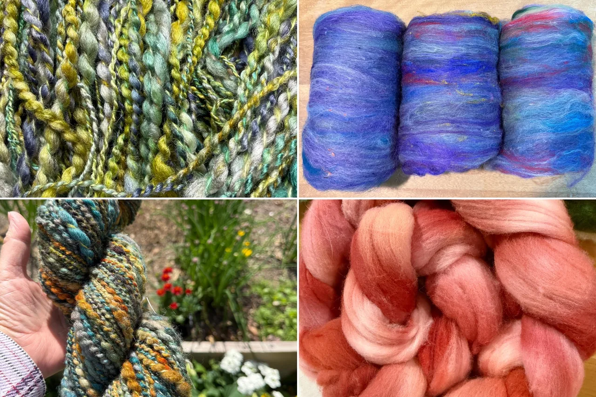
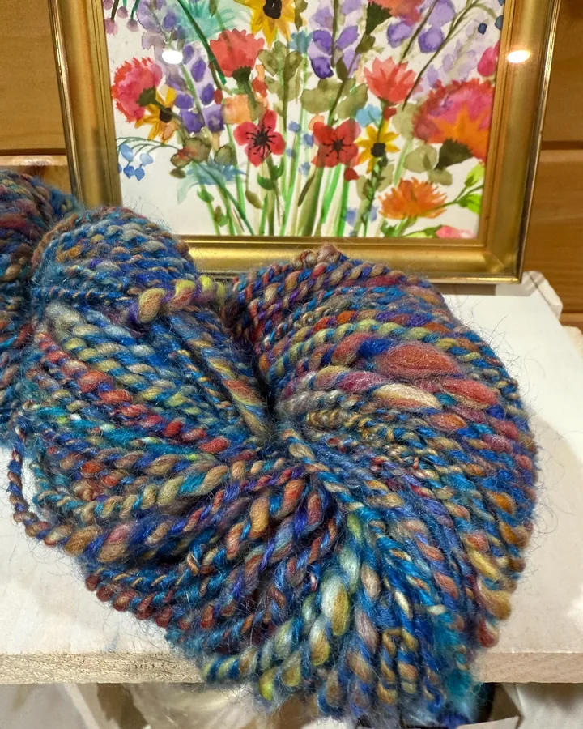
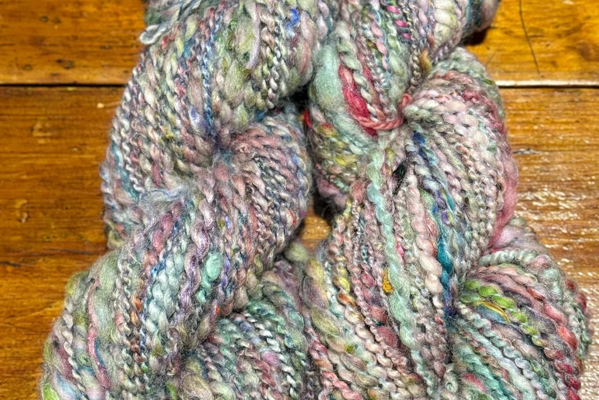
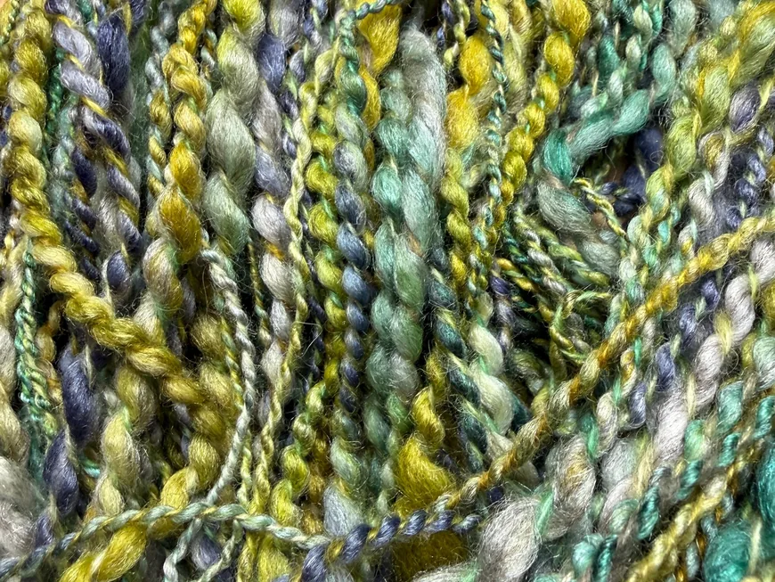
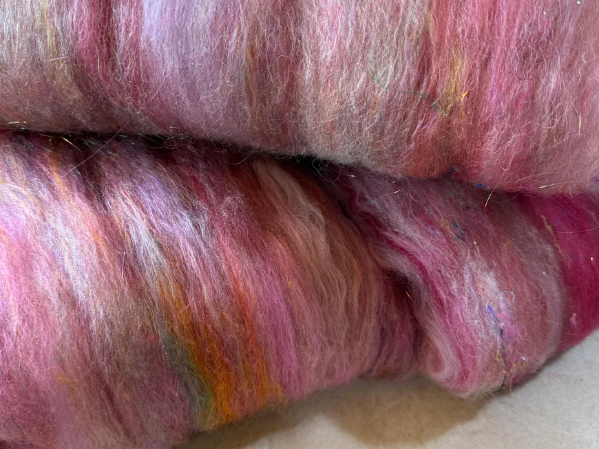
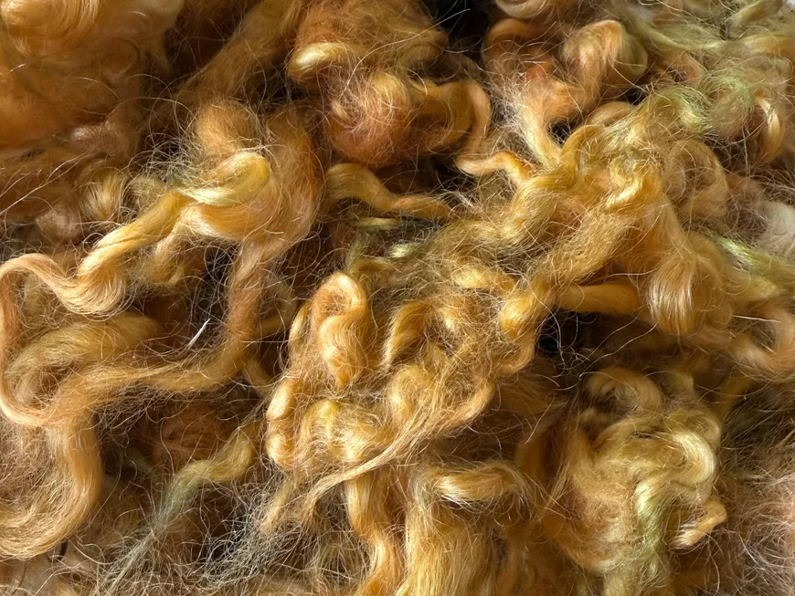
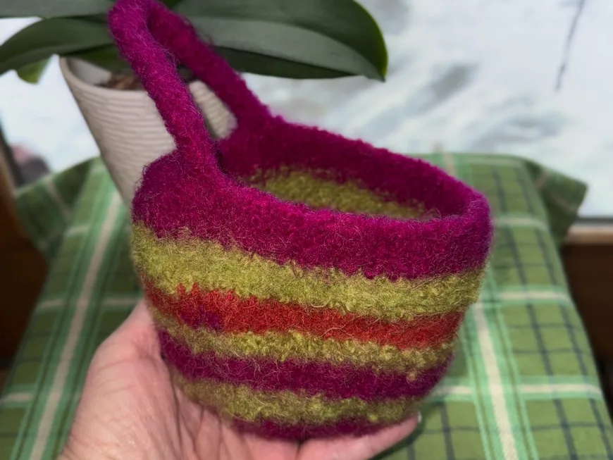

Hand-dyed
Colour that doesn’t run.

Fiber & dye studio · Greenwood, Maine
I love yarn, fiber and colour. I put the two together.
Meet the Artist
Owner & artist of Wool Is Why
Welcome, crafting friends! Here you will find super soft spinning and felting fibers, both natural colours and dyed. I also sew fun fabric bags to hold your crafts: practical and pretty.
Family, coloring wool, fiber, knit, crochet, felt, yarn spinning and sewing.
Our story

01 How it started
Wool Is Why is my fiber and dye studio. I love yarn, fiber and colour, so I put them together.
My days are full of colouring wool, spinning yarn, knitting, crochet, felting and sewing. Some mornings start with knitting, working up a new cowl pattern in wool silk yarn.
From thick and thin art yarns to sheep curls for needle felting trees, frogs and woodlands, everything is made for crafters who love fiber as much as I do.
— Kathleen
02 Where & how it’s made
Natural and dyed fibers from merino, Bluefaced Leicester, Corriedale, Polwarth, yak and silk, carefully prepared, dyed and spun in my studio.

03 What makes it special
Colour that doesn’t run.
Soft, clean fiber that spins like a dream.
Lovely packaging and care in every order.
Reviews
What we make
Hand-spun art yarn, spinning fiber and batts, locks and curls, and craft bags. Here is what you will find in the shop.

Thick and thin art yarns spun from merino, yak, silk and Bluefaced Leicester.

Dyed and natural roving, braids and batts, super soft for spinning and felting.

Sheep curls and locks in natural shades and bright dyed colours.

Practical and pretty fabric and felted bags to hold your crafts.
Everything is sold through the online shop, with secure checkout and buyer protection.
Stay in the loop
Sign up to be the first to know about sales and new products.
You’re in! 🎉
Continue to the shopHand-dyed fiber and yarn from Greenwood, Maine. Follow along on Instagram for new colours!
Visit the shopFind me elsewhere